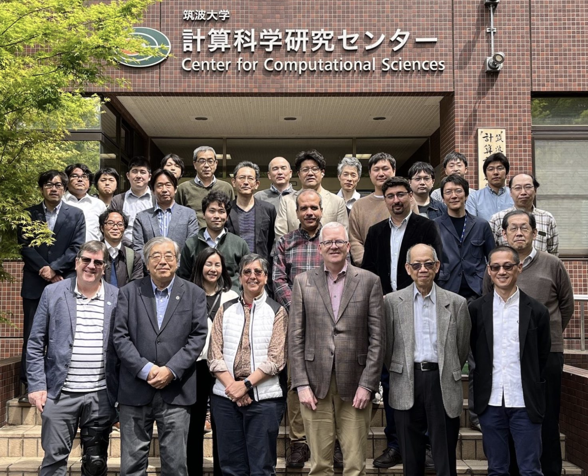
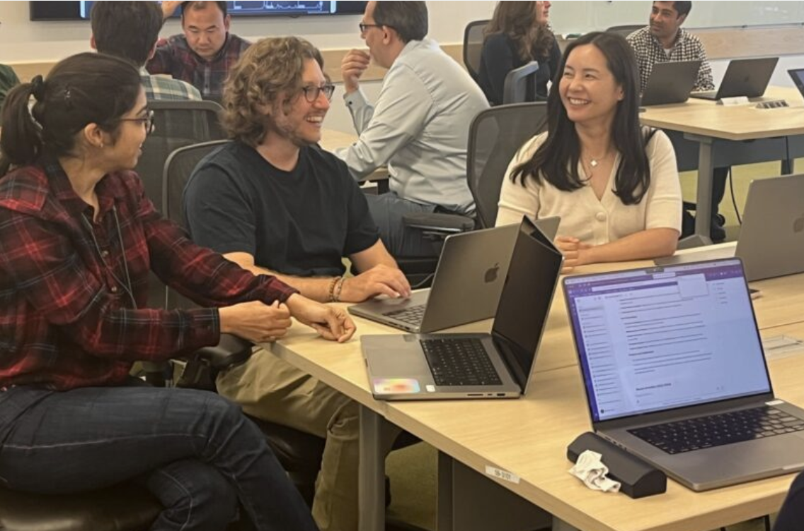
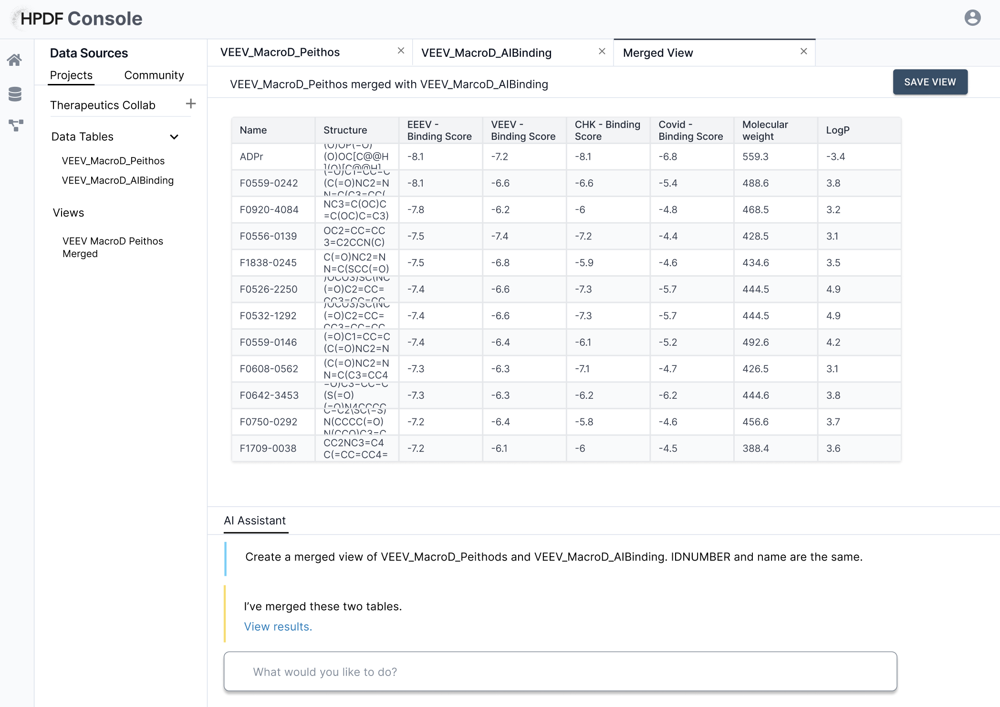
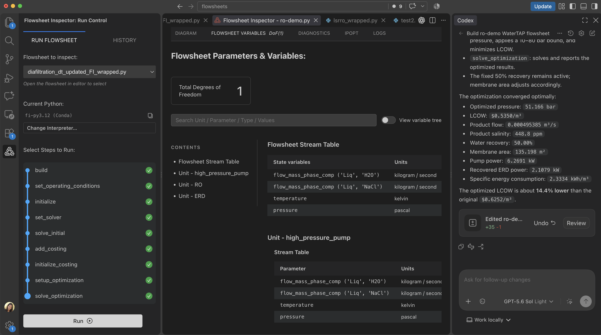
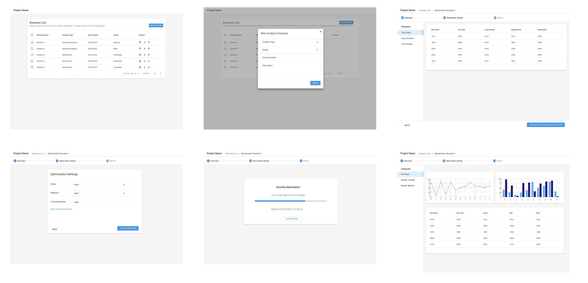

Selected work
Designing tools for complex, technical work
I design software for people working with complex data, scientific models, and technical systems. My recent work explores how UX can make these tools more understandable and how AI is changing both the products we design and the way we design them.



Lawrence Berkeley National Laboratory
Designing for science
I've been designing and developing interfaces for scientists for more than 15 years. From my first project, a Java-based desktop application for tracking supernovae, to broader initiatives such as building a design system for scientific web applications, I've worked closely with cross-functional teams to create software that supports mission-critical science.
The case studies below focus primarily on work I've led as a product designer.

HPDF Console
Designing AI tools, with AI
Designing an AI-enabled data platform while experimenting with AI as a tool within my own design process.
View case study →

PrOMMiS · Flowsheet Inspector
Helping users understand and verify AI-generated code
Exploring how UX and conceptual models can help domain experts work with AI coding agents without relying solely on code.
View case study →

STRUDEL
A design system for scientific software
How an idea for reusable scientific UX patterns grew into a funded design system and an AI-enabled community of practice.
View case study →
Stitch Fix
Designing internal tools for complex operations
Whether in scientific research or fashion, people rely on data to guide decisions and need straightforward workflows to avoid errors. At Stitch Fix, I partnered with internal styling, merchandising, and warehouse teams to design software that streamlined their processes and supported decision-making.
Please contact me if you'd like to see selected work from my time designing tools for the merchandising and warehouse teams.